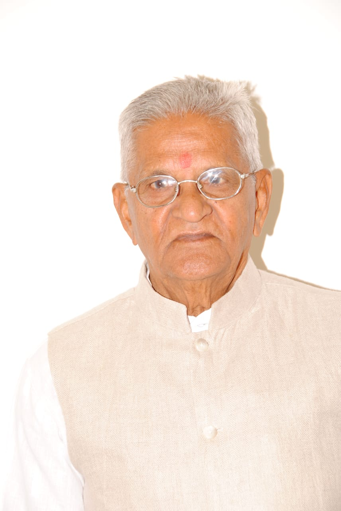

પ્રથમ વાર્ષિક પુણ્યતિથિ

સ્વ.પ્રહલાદભાઈ પ્રભુદાસ પટેલ
2 August 1937 - 14 May 2021

મનુષ્ય જન્મથી નહીં પણ કર્મથી ઓળખાય છે, એટલે જ
તો મરણ કરતાં સંસ્મરણ વધુ યાદગાર બને છે. જેમાં આપની
સ્મૃતિ એક વરદાન છે. તમે ગયા પણ તમારી યાદ હજુ જીવંત
છે. પ્રભુ આપના દિવ્ય આત્માને શાંતિ અર્પે એજ પ્રાર્થના.
न जायते म्रियते वा कदाचि- न्नायं भूत्वा भविता वा न भूयः ।
अजो नित्यः शाश्वतोऽयं पुराणो- न हन्यते हन्यमाने शरीरे ॥
अजो नित्यः शाश्वतोऽयं पुराणो- न हन्यते हन्यमाने शरीरे ॥